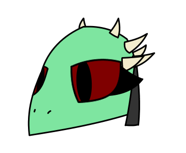

I've just recently made a new head for my Argonian anatomy. When I was gonna go back to work on one I've thought it looked bad for once. So now I will make them with this new head form instead.
 (This was the character I wanted to draw. She was named Arruna)
I doubted that I would improve on this at all but now when I did I see that It's inevitable. Seeing your art as bad is a sign that you're gonna improve and change it for the better. I didn't want to change it but it's going to do that anyway. Strange? It's natural.
Tho I changed the eyes a bit.